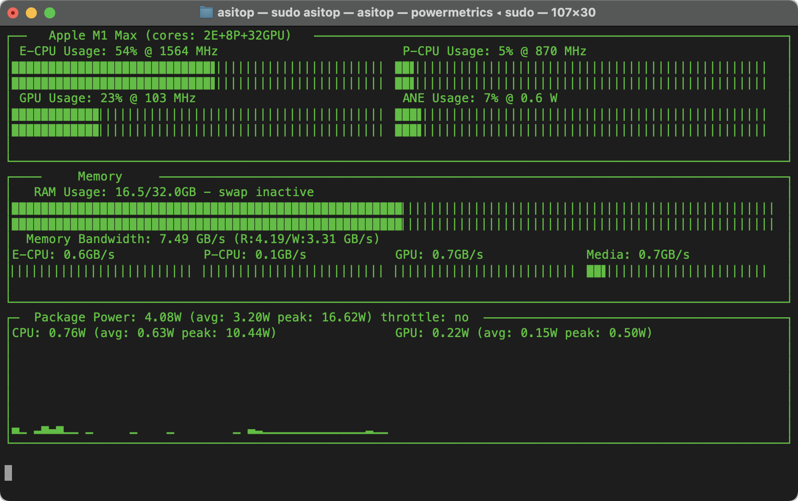

Engineering · Python · Apple Silicon
asitop
4.6k+ starsI built a terminal performance monitor for Apple Silicon that brings CPU and GPU activity,
memory, swap, and power into one view. Powered by macOS powermetrics and
psutil, it also tracks Neural Engine power as an indicator of activity.
- Recorded PyPI downloads
- 340k+
- Later projects inspired by asitop

Media Coverage
Reviews and technical features
- Apfeltalk
· July 2022
Michael Reimann's dedicated hands-on review explores performance analysis in the terminal. - Jeff Geerling
· January 2025
A dedicated section in his monitoring guide includes an asitop screenshot and installation instructions. - Genmind
· May 2022
Gian Paolo Santopaolo places asitop alongside nvitop in a practical AI-engineering toolkit. - davlgd labs
· January 2024
A French-language article examines Apple Silicon monitoring and power consumption.
International tutorials
Developer guides cover installation, troubleshooting, GPU activity, and energy monitoring across several languages.
- Chinese: Wker's overview (2022) and Heo's setup and troubleshooting guide (2023).
- Korean: PyTorchKR's community introduction, Macsplex, IamwhatIam, and Wineskin (2024).
- Japanese: reij061's Zenn notebook on Apple Silicon GPU monitoring (2024).
Continuing recognition
Japanese publication AAPL Ch. continues to identify asitop when explaining later monitoring tools: the mactop launch (2024), macmon's M4 support (2024), mactop's menu-bar update (2026), and SiliconScope's release (2026).
Community use and recommendations
A Topaz Video AI community member shared screenshots of asitop while investigating video-upscaling workloads. Other discussions include local-LLM monitoring recommendations, Blender performance analysis, Hacker News recommendations, and MacRumors installation help.